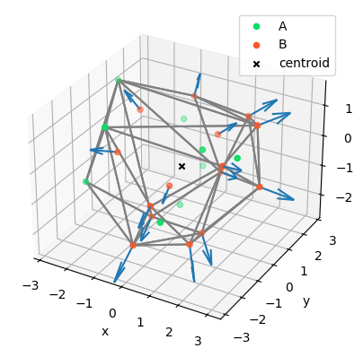

input_data = load_input_data("../data/cdd.txt")core_functions
Functions to create a new set of C vectors directed outwards from a cloud of A and B points and visualize the result.
1. Load input data
load_input_data
load_input_data (path:str)
Load data from a txt file with headers [label, x, y, z] and values separated by spaces.
| Type | Details | |
|---|---|---|
| path | str | path to data file |
| Returns | DataFrame |
input_data.head().round(2)| label | x | y | z | |
|---|---|---|---|---|
| 0 | A | 2.36 | -0.45 | 0.65 |
| 1 | A | 0.97 | -0.12 | 0.40 |
| 2 | B | 0.70 | 1.29 | 0.19 |
| 3 | A | 0.04 | 1.50 | -1.14 |
| 4 | A | 0.01 | 0.14 | -1.81 |
input_data.info()<class 'pandas.core.frame.DataFrame'>
RangeIndex: 24 entries, 0 to 23
Data columns (total 4 columns):
# Column Non-Null Count Dtype
--- ------ -------------- -----
0 label 24 non-null object
1 x 24 non-null float64
2 y 24 non-null float64
3 z 24 non-null float64
dtypes: float64(3), object(1)
memory usage: 896.0+ bytesThe input contains a list of 24 points, each of which is defined by a label and its xyz-coordinates.
input_data["label"].value_counts()label
B 15
A 9
Name: count, dtype: int64There are 2 different subsets of points: 9 A points and 15 B points.
2. Calculate the centroid of the point cloud
get_centroid
get_centroid (points:<built-infunctionarray>)
Calculate centroid of point cloud.
| Type | Details | |
|---|---|---|
| points | array | xyz-coords of points |
| Returns | array |
centroid = get_centroid(input_data[["x", "y", "z"]].values)
centroid.round(2)array([ 0.24, -0.16, -0.31])3. Generate new C points from B points
First create a function to select the B points:
get_labeled_points
get_labeled_points (input_data:pandas.core.frame.DataFrame, label:str)
Select subset of points by label.
| Type | Details | |
|---|---|---|
| input_data | DataFrame | points labels and xyz-coords |
| label | str | label of subset of points |
| Returns | array |
B_points = get_labeled_points(input_data, "B")B_points.shape(15, 3)B_points[:3].round(2)array([[ 0.7 , 1.29, 0.19],
[ 0.23, -0.84, -0.63],
[-1.49, -1.08, 0.14]])Then, define a function that calculate a new point C at a given distance from a point B along the direction centroid->B
calculate_C_point
calculate_C_point (B_point:<built-infunctionarray>, centroid:<built- infunctionarray>, distance:float=1.0)
Given a point B, calculate a vector C originating from B and directed outwards from the point cloud, along the direction centroid–>B_point.
| Type | Default | Details | |
|---|---|---|---|
| B_point | array | B point | |
| centroid | array | centroid of point cloud | |
| distance | float | 1.0 | prescribed distance D of the B->C vector |
| Returns | array |
For each B point calculate the corresponding C point
C_points = np.apply_along_axis(lambda p: calculate_C_point(p, centroid), 1, B_points)C_points[:3].round(2)array([[ 0.99, 2.2 , 0.5 ],
[ 0.21, -1.74, -1.06],
[-2.35, -1.54, 0.36]])4. Visualize the result
It is useful to visualize the results in 3D, together with the point cloud. First let’s calculate the convex hull of the original point cloud and plot it
plot_convex_hull
plot_convex_hull (ax:mpl_toolkits.mplot3d.axes3d.Axes3D, points:<built- infunctionarray>)
3D plot of convex hull.
| Type | Details | |
|---|---|---|
| ax | Axes3D | |
| points | array | xyz-coords of points |
| Returns | Axes3D |
Now let’s define the functions to plot the point cloud and the new vectors C
plot_points
plot_points (ax:mpl_toolkits.mplot3d.axes3d.Axes3D, input_data:pandas.core.frame.DataFrame)
3D plot of original points.
| Type | Details | |
|---|---|---|
| ax | Axes3D | |
| input_data | DataFrame | labels and xyz-coords of points |
| Returns | Axes3D |
plot_vectors
plot_vectors (ax, vectors:<built-infunctionarray>, origins:<built- infunctionarray>, length:float=0.3)
Plot vectors as arrows.
| Type | Default | Details | |
|---|---|---|---|
| ax | |||
| vectors | array | vector to plot | |
| origins | array | origin of vector | |
| length | float | 0.3 | vector length |
plot_ABC
plot_ABC (input_data:pandas.core.frame.DataFrame, C_points:<built- infunctionarray>, centroid:<built-infunctionarray>)
Plot point cloud including its convex hull and the C vectors as arrows.
| Type | Details | |
|---|---|---|
| input_data | DataFrame | labels and xyz-coords of points |
| C_points | array | calculated C points |
| centroid | array | centroid of point cloud |
| Returns | figure |
fig = plot_ABC(input_data, C_points, centroid)Let’s create a function to run it all, end-to-end:
calculate_C_points
calculate_C_points (input_file:str, output_file:str, output_plot_file:str=None, distance:float=1.0)
Calculate C points and export them to a file (together with the result plot, optionally).
| Type | Default | Details | |
|---|---|---|---|
| input_file | str | input file path with point A and B data | |
| output_file | str | output file path for the generated C points | |
| output_plot_file | str | None | output file path for the plot of point cloud and C vectors |
| distance | float | 1.0 | prescribed distance D of the B->C vectors |
And run it on the input data:
input_data = "../data/cdd.txt"
output_result = "../data/result_C_points.txt"
output_plot = "../data/result_plot.png"calculate_C_points(input_data, output_result, output_plot_file=output_plot)Loading input data from '../data/cdd.txt'...
Calculate points...
Saving result data to '../data/result_C_points.txt'...
Exporting plots to '../data/result_plot.png'...
Done.